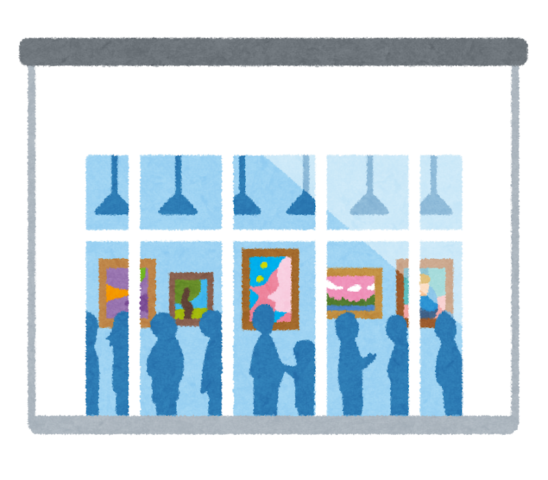

My Hobbies
🍞
パン作り
始めた時期: 2年前
好きなパン: フランスパン
作る頻度: 週末に1回
特別な道具: オーブン・パン焼き型・ボウル・スケッパー・パンこね台
パン作りは私の趣味で焼き上がりの香りは最高です。家族で美味しいパンを食べる時間が好きです。
✈️
旅行
好きな場所: 落ち着く場所
旅行スタイル: 家族旅行・のんびり観光
思い出の場所: 韓国・タイ
次の目標: 沖縄・台湾
新しい場所を訪れて、その土地の文化や美味しい食べ物を発見するのが大好きです。特に国ごとの料理を楽しむ時間は最高です。
💎
ダイヤモンドアート
始めた時期: 1年前
好きなデザイン: ディズニー
完成作品数: 4作品
制作時間: 1作品あたり4日～1週間
細かい作業に集中することで、日々のストレスを忘れることができます。完成した時の達成感がストレス発散になります。
📚
読書
好きなジャンル: ミステリーなど
読書頻度: 通学時間
お気に入りの作家: 東野圭吾・村上春樹
最近読んだ本: 「クスノキの番人」・「近畿地方のある場所について」・「東京奇譚集」
読書は心を落ち着かせてくれる大切な時間です。新しい知識や物語に触れることで、いろんなアイデアを与えてくれます。
🍡
和菓子巡り
好きな和菓子: 羊羹・練り切り・本わらび餅
巡ったお店: 京都・大阪・兵庫・三重・金沢など
頻度: 月2回
日本各地の和菓子を巡ることが楽しみです。特になかなか食べられない本わらび粉で作られた本わらび餅が大好きです。

🖼️
美術館巡り
好きなジャンル: 近代美術・現代アート
訪れた美術館:京都市京セラ美術館・地中美術館・李禹煥美術館・ベネッセハウス ミュージアム・直島にある家プロジェクト・ANDO MUSEUM・直島新美術館・神戸ゆかりの美術館・神戸北野美術館
頻度: 2か月に1回ほど
美術館で静かな時間を過ごすことが好きです。新しい作品や展示に出会うのが毎回楽しみです。
将来挑戦したい趣味
- 🌷 華道
- 🍪 お菓子作り
- 📸 写真撮影
- 🌱 ガーデニング